██████╗ ██████╗ ██╗ ██╗ █████╗ ╚════██╗██╔═══██╗██║ ██║██╔══██╗ █████╔╝██║ ██║███████║███████║ ╚═══██╗██║ ██║██╔══██║██╔══██║ ██████╔╝╚██████╔╝██║ ██║██║ ██║ ╚═════╝ ╚═════╝ ╚═╝ ╚═╝╚═╝ ╚═╝
Welcome to 3OHA, a place for random notes, thoughts, and factoids that I
want to share or remember.
24 March 2021
During a lecture on computer worms last week I briefly talked about the WANK worm and the origins of political hacktivism. The story draw the attention of some students and I pointed them to Dreyfus and Asange's 1997 book Underground: Tales of Hacking, Madness and Obsession on the Electronic Frontier. This is a terrific book that covers the WANK incident in the first chapter, and is also packed with lots of other awesome stories. My students then asked me for more books like this, so I promised them to compile a list of books on the computer undergound culture of (mostly, though not only) the 1980s, 1990s and early 2000s.
This is not meant to be an exhaustive list, just some material that will help you to understand what the computer underground looked like back then. I list them in chronological order of publication, and I only recommend books that I have read. There are some obvious omissions of texts that concentrate on more recent events. I am deliberately omitting those since I want to keep the list focused just on old-school culture and the emergence of the modern cybercrime economy.
| 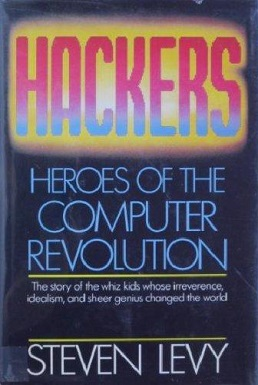 |
Hackers: Heroes of the Computer Revolution by Steven Levy (1984) This is one of the earliest books that introduces some of the key history events in that shaped the notions of a Hacker Culture and a Hacker Ethic. The material is presented chronologically, starting with the legendary Tech Model Railroad Club (TMRC) at MIT in the late 1940s. It then moves on to the 1960s and 1970s with the Homebrew Computer Club and the personal computer revolution, and also covers the game hackers of the 1980s. Overall, it is a collection of entertaining short stories about some of the pioneers of modern computing. The book used to be hard to find, but there is a 25th anniversary edition published in 2010 that is fairly easy to get. |
|
| 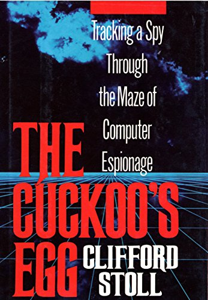 |
The Cuckoo's Egg: Tracking a Spy Through the Maze of Computer Espionage
by Cliff Stoll (1990) This is an absolutely must-read for everyone with an interest in the story of computer espionage. The book is based on true events and describes how the author, a system administrator at Lawrence Berkeley Lab, identified a misterious 75-cent accounting error that pointed to the presence of unauthorized users in the system. This resulted in a one-year hunt after a group of Germany-based hackers who were stealing military information for the KGB. The incident made the news at the time and was also covered in the March 29, 1989 issue of Phrack. |
|
| 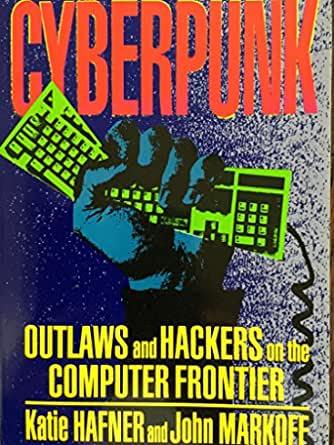 |
Cyberpunk: Outlaws and Hackers on the Computer Frontier by Katie Hafner and John Markoff (1991) The book revolves around the exploits of three different hackers: Kevin Mitnick (whose actions have been extensively described in other books), Hans Hübner (a.k.a. Pengo, who was part of the spy ring described in The Cuckoo's Egg), and Robert T. Morris (yes, the one who wrote and set free the worm). |
|
| 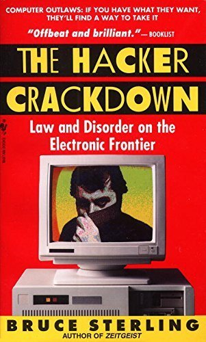 |
The Hacker Crackdown: Law And Disorder On The Electronic
Frontier by Bruce Sterling (1992) This is a nice collection of important events that took place in the hacking underground during the late 1980s and early 1990s. It provides a comprehensive description of Operation Sundevil, one of the earliest large police crackdowns on hacking activities -- which, incidentally, resulted in the creation of the EFF, which then hired lawyers to represent some of the hackers. The book depicts a few other important events and characters of the time, including the wars on the LOD. You can get a copy for free at multiple sources, including Project Gutenberg and this GitHub repository. |
|
| 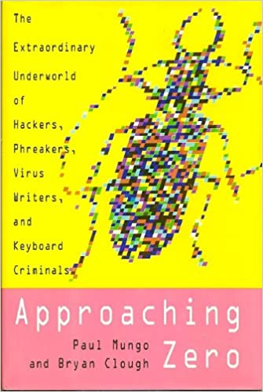 |
Approaching Zero: The Extraordinary Underworld of Hackers, Phreakers, Virus Writers, and Keyboard Criminals by Paul Mungo and Bryan Clough (1993) This book is an account of the early days of the hacking culture up to the mid 1990s. As some other similar books that were published at the time, it covers relevant events in the H/P/A/V/C scene that progressively shaped the computer underground in those years. |
|
| 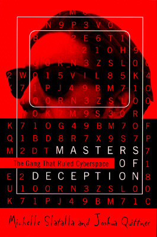 |
Masters of Deception: The Gang That Ruled Cyberspace by Michele Slatalla (1995) The book describes two of the legendary (and rival) hacker groups of the late 1980s and early 1990s: Legion of Doom (LOD) and Masters of Deception (MOD), and the events that were later known as The Great Hacker War. It paints a vivid portrait of the phreaking scene, the rivalry and motivations of a bunch of NY and TX teenagers, and how the first raids, court orders and cases against these activitites were built. |
|
| 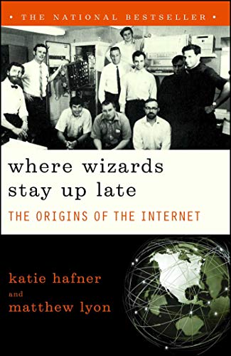 |
Where Wizards Stay Up Late: The Origins Of The Internet by Katie Hafner and Matthew Lyon (1996) This is a book covering some of the key events and people that were involved in the making of the Internet during its early days (BBN, Arpanet). It combines a description of the people, the events, and the technology, though it is not overly technical. A must-read for computer history geeks. |
|
| 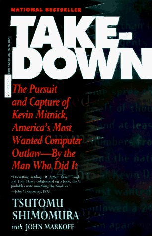 |
Takedown: The Pursuit and Capture of Kevin Mitnick, America's Most
Wanted Computer Outlaw - By the Man Who Did It by Tsutomu Shimomura and John Markoff (1996) This is one of the various books that portray the story of Kevin Mitnick, who became some sort of cultural icon at the time. The book reads like a detective story describing the hunt, entwined with bits and bobs about Shimomura's own life. I have read multiple books on Mitnick's story and each one provides complementary (and sometimes contradictory) views. If you feel attracted to this, be sure you also read Ghost in the Wires, The Fugitive Game, and the first part of Cyberpunk for a broader perspective on the character and the events. (I am aware of yet another book covering Mitnick's case: Jeff Goodell's The Cyberthief and the Samurai (1997). I haven't read this one, though.) |
|
| 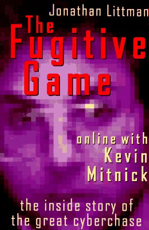 |
The Fugitive Game: Online with Kevin Mitnick by Jonathan Littman (1997) This book provides a complementary view on Mitnick's story. Littman, who spent many hours of telephone conversations with Mitnick, tells a rather different story than the one described by Shimomura and Markoff in Takedown. There are very few technical details in the book. The focus is rather on Mitnick's personality and lifestyle. Even though the author's sympathies towards Mitnick are evident, I would definitely recommend it to anyone interested in going beyond the official side of the story. |
|
| 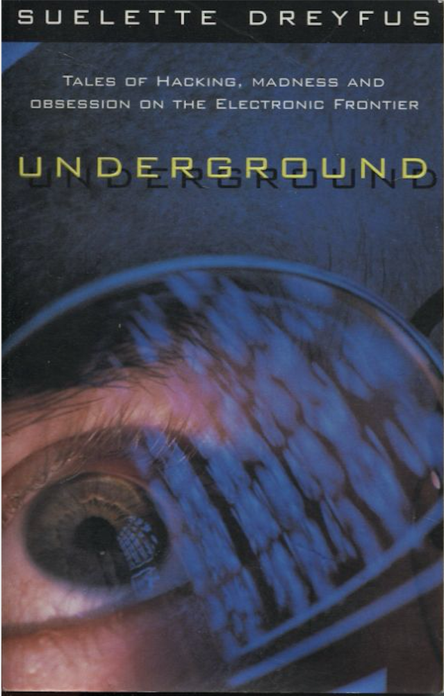 |
Underground: Tales of Hacking, Madness and Obsession on the Electronic
Frontier by Suelette Dreyfus and Julian Assange (1997) The book describes the deeds of multiple American, British, and Australian groups during the late 1980s and early 1990s, as well as numerous police crackdowns. There is a free version of the book in the Project Gutenberg. |
|
| 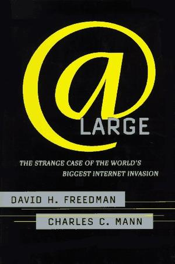 |
At Large: The Strange Case of the World's Biggest Internet
Invasion by David Freedman and Charles Mann (1997) This is yet another real-life story of a hacker manhunt around 1991 and 1992. Using the handles Phantomd and Informaster, a teenager named Matthew Singer from Portland, Oregon, went deeper into commercial, educational, and government networks until a federal investigation seized him. As other books that focus on similar police manhunts, it provides a glimpse of how bad security was, as well as the tactics, motivations, and obsessions with computers and programming of a young hacker. |
|
| 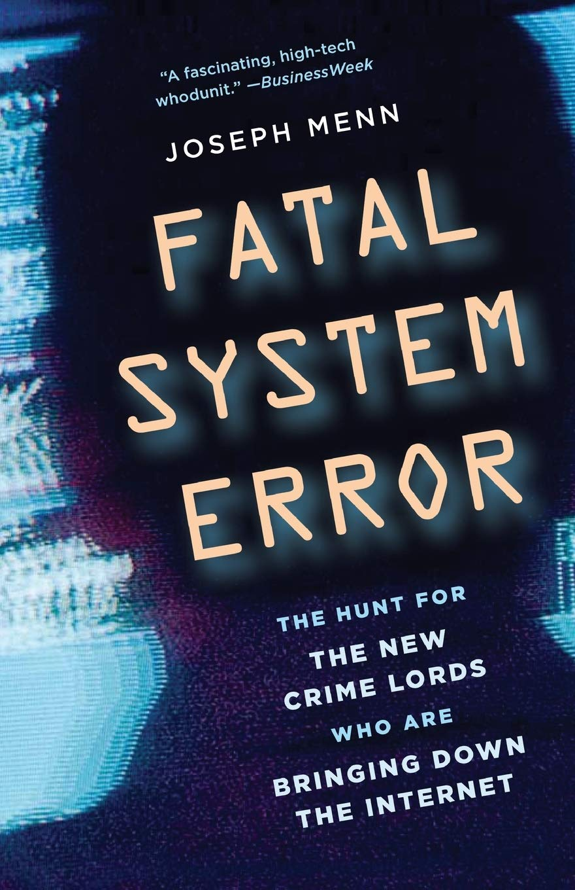 |
Fatal System Error: The Hunt for the New Crime Lords Who Are Bringing
Down the Internet by Joseph Menn (2010) This book describes a different and newer underground: the criminal ecosystem that emerged around the mid 2000s to exploit new forms of Internet-based crime. It is worth reading for the historical perspective on the emergence and evolution of this phenomenon and its political ramifications. |
|
| 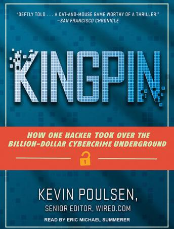 |
Kingpin: How One Hacker Took Over the Billion-Dollar Cybercrime
Underground by Kevin Poulsen (2011) The book is an account of the events that surrounded Max "Vision" Butler (a.k.a. Iceman) conviction. It depicts some of the carder underground at the time, inlcuding the rise of credit card scams and identity theft through the 1990s and the early 2000s. Great read showing how part of the underground gradually shifted towards for-profit criminal activities. |
|
| 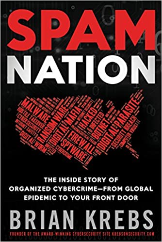 |
Spam Nation: The Inside Story of Organized Cybercrime-from Global
Epidemic to Your Front Door by Brian Krebs (2014) This is a fantastic account on how Russian spam affiliate programs worked and the different stakeholders behind it. This is an excuse to introduce support technologies ranging from hosting to botnets (and botnet takedown) and malware distribution schemes. This is, together with Menn's Fatal System Error --and, to a lesser extent, Poulsen's Kingpin-- must-reads to understand the emergence of the modern cybercrime ecosystem and its associated economy. |
|
| 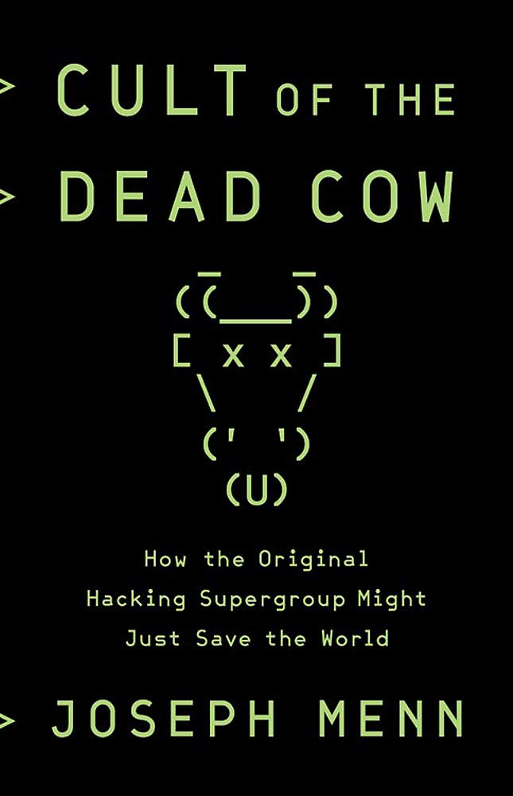 |
Cult of the Dead Cow: How the Original Hacking Supergroup Might Just
Save the World by Joseph Menn (2019) The book covers a good bunch of stories about people surrounding one of the best-known hacker collectives of the 1990s -- cDc, as well as other related groups such as the L0pht. That was a unique time in the history of the underground, and the book provides good examples on issues that will later become very influential, such as how the software industry reacted to the discovery of security bugs. |
Everything posted here is by default published under a
CC BY-NC-SA 4.0 Creative Commons license. You may redistribute it with
attribution but not modify it. I may subsequently assign the residual
copyright to an academic publisher.